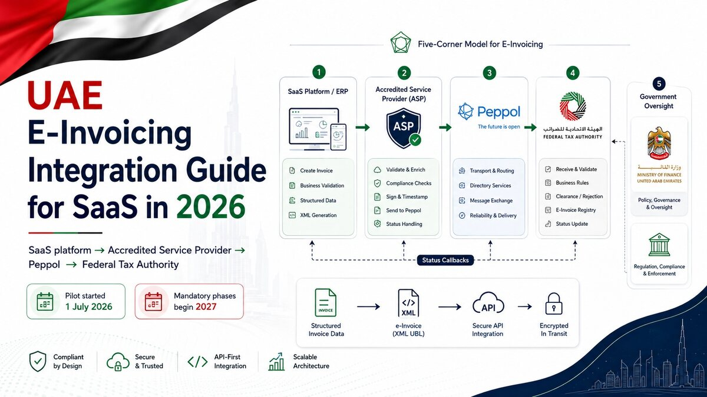

Published · 9 min read
UAE E-Invoicing Integration Guide for SaaS in 2026

UAE e-invoicing integration is now a real engineering priority for SaaS platforms, ERP products and finance systems serving businesses in Dubai, Abu Dhabi, Sharjah and the wider Emirates. The UAE pilot started on 1 July 2026, and mandatory adoption begins in phases from January 2027.
This is not a feature where a developer generates a PDF and emails it to a customer. The UAE Ministry of Finance defines an e-invoice as structured data exchanged electronically and reported to the Federal Tax Authority. PDF, Word, image, scanned and email invoices do not meet that definition.
I build multi-tenant SaaS products with billing, role-based access, webhooks and production audit trails. The same engineering habits matter here: isolate each tenant, validate data before transmission, make retries idempotent, preserve status history and never treat a successful HTTP request as final business confirmation.
This guide explains the current UAE e-invoicing timeline, the five-corner architecture, the data your application must capture, and a practical integration plan for a SaaS or ERP development team. It is technical guidance, not tax or legal advice; businesses should confirm their exact obligations with an accredited provider and qualified UAE tax adviser.
UAE e-invoicing requirements and deadlines in 2026
The federal framework applies across the UAE. A company in Dubai follows the same national e-invoicing system as a company in Abu Dhabi or Sharjah. Local landing pages can answer city-specific service searches, but the software should not create different tax logic just because a customer changes emirate.
The Ministry of Finance says the system covers in-scope business-to-business and business-to-government transactions. Business-to-consumer transactions are currently outside the mandatory system until a later ministerial decision. That distinction should exist in your domain model instead of being guessed from an invoice template.
Current phased implementation dates
For a business with annual revenue of at least AED 50 million, the amended deadline to appoint an Accredited Service Provider, or ASP, is 30 October 2026. Mandatory implementation remains 1 January 2027. The appointment date was extended from the older 31 July deadline, so teams should avoid relying on an outdated checklist.
Businesses below AED 50 million must appoint an ASP by 31 March 2027 and implement the system by 1 July 2027. In-scope government entities must appoint an ASP by 31 March 2027 and implement by 1 October 2027. Voluntary implementation has been available since 1 July 2026.
Do not hard-code these dates deep inside billing logic. Store compliance milestones as configuration and monitor the official Ministry of Finance portal because the programme continues to evolve.
An accredited provider is part of the architecture
A UAE business does not simply send invoice XML directly from its Node.js API to the tax authority. It selects an accredited provider through EmaraTax, enters a commercial agreement, completes onboarding and integrates its accounting or SaaS system with that provider.
The Ministry publishes and updates the provider list. Product teams should compare API documentation, sandbox access, supported accounting workflows, service-level commitments, data residency, security, pricing, error reporting and migration options. A provider logo on a sales page is not enough; your engineers need to see how identifiers, invoices, credit notes and message statuses actually move through the API.
How the UAE five-corner e-invoicing model works
The UAE uses a decentralised continuous transaction control and exchange model built around Peppol. In simple terms, the supplier and buyer each connect through accredited providers, while relevant tax data is reported to the FTA.
The supplier is Corner 1 and sends invoice data to its ASP at Corner 2. That provider validates the data and converts it to the UAE standard XML format when necessary. It sends the invoice to the buyer's ASP at Corner 3, which delivers it to the buyer at Corner 4. Tax Data Documents are reported to Corner 5, and Message Level Status responses travel back through the chain.
The important engineering lesson is that invoice creation, delivery and tax reporting are separate states. Your application needs to record each state instead of using one vague boolean such as invoiceSent.
PINT-AE is structured data, not visual design
PINT-AE is the UAE localisation of the Peppol invoice specification. It defines the meaning, format and validation rules for invoice data while keeping documents interoperable through the wider Peppol framework.
The official mandatory-field document covers invoice identifiers and dates, currency and transaction codes, payment information, seller and buyer identities, tax registration details, addresses, document totals, tax breakdowns and invoice lines. A visually complete PDF may still fail because a required electronic identifier, code or total is missing or inconsistent.
Start with a data-gap assessment. Compare every mandatory PINT-AE field with the information currently stored in your customer, organisation, product, tax and invoice tables. Missing data should become an onboarding requirement before the first production submission.
Design a real invoice state machine
I would model the workflow with explicit statuses such as draft, validated, queued, submitted, exchange_accepted, tax_reported, delivered and rejected. The exact names should match the chosen ASP, but the principle is stable.
Save the provider reference, request timestamp, response timestamp, message status, validation errors and retry count. Keep the original business record and the transmitted payload version. If a credit note later refers to the invoice, the relationship must remain traceable.
Technical UAE e-invoicing integration checklist
A reliable implementation should sit behind a provider-neutral adapter. Your core billing domain creates a canonical invoice; the adapter maps it to the chosen ASP request. This keeps provider-specific authentication, endpoints and error codes out of the rest of the application.
type UaeInvoice = {
tenantId: string
invoiceNumber: string
issuedAt: string
currency: 'AED' | string
seller: Party
buyer: Party
lines: InvoiceLine[]
totals: InvoiceTotals
taxBreakdown: TaxBreakdown[]
}
async function submitInvoice(invoice: UaeInvoice) {
await validatePintAe(invoice)
const key = invoice.tenantId + ':' + invoice.invoiceNumber
return aspClient.submit(mapToProvider(invoice), { idempotencyKey: key })
}This example is intentionally provider-neutral. The actual payload, authentication and status values must follow the accredited provider's current API contract and the official PINT-AE rules.
Validate before the network call
Run schema validation, business rules and arithmetic checks before submission. Confirm that line totals, discounts, taxable amounts, tax amounts, rounding and document totals reconcile. Validate codes against allowed lists rather than accepting arbitrary strings from a form.
Return useful errors to the finance team. “Invalid invoice” creates support work; “buyer electronic address is missing” gives a person something they can fix. Keep technical response details in protected logs, not in a customer-facing page.
Make delivery idempotent and asynchronous
Invoice submission should normally run through a durable queue. A temporary provider timeout must not block the user interface or create duplicate invoices when someone clicks again. Use an idempotency key tied to the tenant and invoice identity, then store the provider's unique reference.
Retries should use backoff and distinguish temporary failures from permanent validation errors. Do not retry a structurally invalid document forever. Move repeated failures to a review queue and alert the right operator.
Provider callbacks also need authentication, replay protection and idempotent processing. Receiving the same status twice should not duplicate accounting entries, emails or credit actions.
Protect every tenant boundary
A UAE e-invoicing SaaS platform may serve many companies from one application. Every invoice, provider credential, callback mapping, tax registration number and status query must be scoped to the correct tenant.
Encrypt provider secrets at rest, restrict access by role, rotate credentials and avoid writing full invoice payloads into general application logs. Invoice data contains commercial and identity information. Log the minimum necessary for diagnosis, and use a protected audit store for records that must be retained.
This is similar to the isolation work I described in my Supabase RLS guide for multi-role applications: a hidden button is not security. The API and database must enforce ownership for every request.
Test rejection, credit notes and reconciliation
A happy-path invoice is only the beginning. Test missing buyer identifiers, invalid tax codes, rounding differences, duplicate invoice numbers, expired credentials, provider downtime, negative acknowledgements and delayed callbacks.
Include electronic credit notes and self-billing scenarios that apply to the product. Run a daily reconciliation job that compares your internal invoice state with the provider's status. Dashboards should show finance teams what is pending, rejected or mismatched without requiring a developer to search logs.
A rollout plan for SaaS teams in Dubai and the UAE
For a Dubai SaaS company, an Abu Dhabi enterprise platform or a Sharjah accounting product, I would split delivery into four controlled phases.
1. Discovery and data mapping
Confirm which entities and transaction types are in scope with professional advisers. Select candidate ASPs, obtain sandbox documentation and map existing data to PINT-AE mandatory fields. Record every missing field and decide who owns collecting it.
2. Build the provider adapter
Create the canonical invoice model, validation layer, provider adapter, queue, callback endpoint and audit records. Keep a feature flag per tenant so onboarding can happen gradually rather than through one risky global release.
3. Prove the complete lifecycle
Test invoice submission, buyer exchange, FTA reporting status, rejection correction, credit notes and reconciliation in the sandbox. Include finance, engineering, security and support in acceptance testing. A technically valid request is not enough if staff cannot understand and resolve a rejection.
4. Launch and monitor
Onboard a small group first, watch response times and error categories, then expand. Track submission success, rejection rate, unresolved age, callback delay and reconciliation differences. Keep the old invoice process available only as an approved rollback path, not as an undocumented parallel system.
SEO pages aimed at “e-invoicing software Dubai”, “UAE e-invoicing integration”, or “SaaS developer Abu Dhabi” should explain a genuine service and link to useful technical evidence. Repeating Dubai, Sharjah and Abu Dhabi in every heading will not build trust. One strong UAE guide supported by relevant service pages is better than dozens of thin location copies.
Practical takeaway
UAE e-invoicing is a structured integration project, not a PDF-export task. The product must capture complete PINT-AE data, connect through an accredited provider, track exchange and tax-reporting statuses, process callbacks safely, reconcile results and preserve an auditable history.
Start with data mapping and provider evaluation. Then build a tenant-safe, idempotent integration that can survive timeouts, duplicate messages and validation failures. That foundation matters whether the customers are in Dubai, Abu Dhabi, Sharjah or elsewhere in the UAE.
Regulatory details may change, so use the official UAE Ministry of Finance e-invoicing portal, its electronic invoicing guidelines, and the current provider list as the source of truth.
If your UAE team needs help designing a secure SaaS, ERP or API integration for billing workflows, contact me to discuss the project.
About Muhammad Mustafa
Full-Stack SaaS & AI Engineer with 10+ years of experience building production web applications, multi-tenant platforms, secure integrations and AI-powered products.